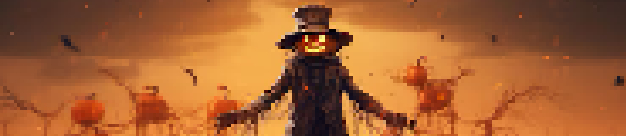

Na noite de 31 de outubro, as pessoas apagavam tochas e fogueiras,
vestiam fantasias elaboradas, vagando pelo bairro de forma barulhenta,
com risos, gritos e o balanço de doces em sacolas. Com intuito de
espantar os espíritos errantes que "Vagavam" pela noite em busca
de corpos para possuir na véspera do dia dos santos.
"Doces ou travessuras" teve origem na tradição europeia antiga,
que consiste na prática cristã durante o dia dos santos,
nessa época, os fiéis pediam "soul cakes", pequenas bolachas
feitas para esta única ocasião. Em troca dessas iguarias,
as pessoas se comprometiam em orar pela alma dos mortos,
para que eles saíssem do limbo e alcançassem o céu.
Apesar de ser uma festa originária de práticas pagãs, Halloween
é um nome moderno que surgiu de uma celebração cristã estabelecida
na Idade Média — a véspera do Dia de Todos os Santos,
conhecida como All Hallows’ Eve. Nesta data, os cristãos
se preparavam para honrar os santos e as almas dos falecidos,
refletindo sobre a vida e a morte.

Charles ••• Guilherme ••• Gustavo ••• João Pedro ••• João Fernando ••• Yasmin